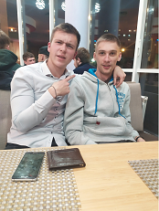

Resume
First name: Vadim
Last Name: Kamosko
Sex: Male
Age: 22
Contact info
Phone number: +375 (29) 818-88-78
Summary
Now I’m free for a new opportunities. So I decided to take courses to test myself and my knowledge. To exclude possible spaces, learn something new. And find new connections. Every day I’m learning information related to Frontend, i’m practicing and coding.
Skills
Programming languages
- JavaScript
Frameworks
- React
Tools & Technologies
- HTML5
- CSS3
- AJAX
- JSON
- jQuery
- Git
Experience
I worked as a web developer for a year. Where I developed adaptive and cross browser layouts, websites, landing pages, responsive themes for WordPress. Various custom work. Also, I worked as a front-end developer for a year. I was involved in web development of various projects and SPA development for different clients.
Education
| Education institution name | Degree | Field of study | Qualification | Start Year | End Year |
|---|---|---|---|---|---|
| Vitebski Dzjaržauny Universitet imja P.M. Mašerova | Bachelor’s degree | Math and Computer Science | Computer Network software | 2016 | 2020 |
English
I have been studying English since first grade at school. After school, I had two years of English at university. Now I practice my English on online platforms such as duolingo, lingualeo, puzzle-english.com. I have B1 level of English.